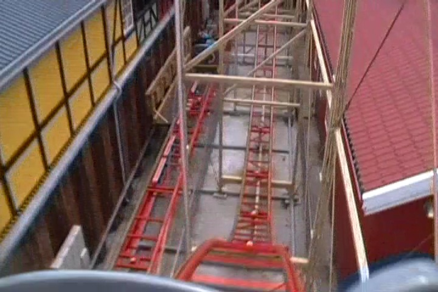
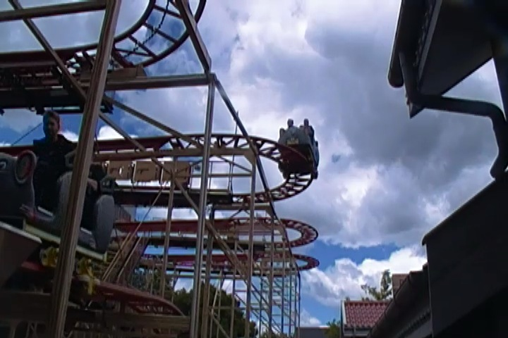

| |
Vilde Mus Review

We're here at Bakken where we'll reveiwing the parks Wild Mouse, Vilde Mus. After getting in the seats and pulling down the lap bar, you go up the lifthill. Up, up, and up you go. Near the top, if you turnaround, you can get a nice shot of the switchbacks on the ride. Then once we get to the top, you get whipped around a turn and set into the switchbacks. The switchbacks are fun because those turns are just great. It really whips you. This really is up there as one of the stronger Wild Mouse coasters. Then after going through the set of switchbacks, you are set off into a nice big turn that just pins you to the side the entire time. Then you turnaround only to go through the rides biggest drop. While it's not a very big drop. It's still fun. And the fact that there's no trim brakes makes it really good. And I mean REALLY good. Then you finally meet a set of trim brakes. Hey, considering how this ride is one of the better Wild Mouse coasters, I don't mind. Then you come through another turnaround where we head towards the end of the ride. after another small drop, we head into the extra hump. Now actually, this hump is found on many Wild Mouse rides around the world, but because Goofy's Sky School doesn't have it, it is always refered to as the extra hump that Goofy's Sky School doesn't have. The extra hump is a lot of fun and definetly something that should be on all Wild Mouses. And of course, it beats us around. And I like that. At this point, pretty much over as we turn into a final dip into the brake run. While Vilde Mus isn't too special, I still find it as a really good Wild Mouse as the turns are flat, the drops are fun, there barely any brakes, it beats you around, and most importantly, THE EXTRA HUMP IS HERE!!!! If you've been on a clone of it, I'd recommend skipping it. But if you're only limited to Arrow Mice, Goofy's Sky School, or have never ridden a Wild Mouse at all (or you need the credit), I'd highly recommend riding it.
6/10
Location: Bakken
Opened: 2012
Built by: Maurer Sohne
Last Ridden: June 14, 2014
I have ridden this exact same ride at the following parks.
Carowinds
Hersheypark
Movie Park Germany
Nagashima Spaland
Vilde Mus Photos


Home
|